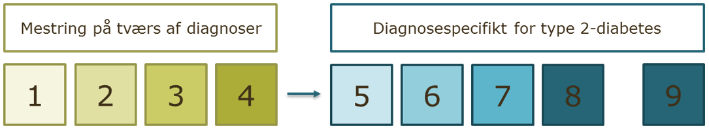
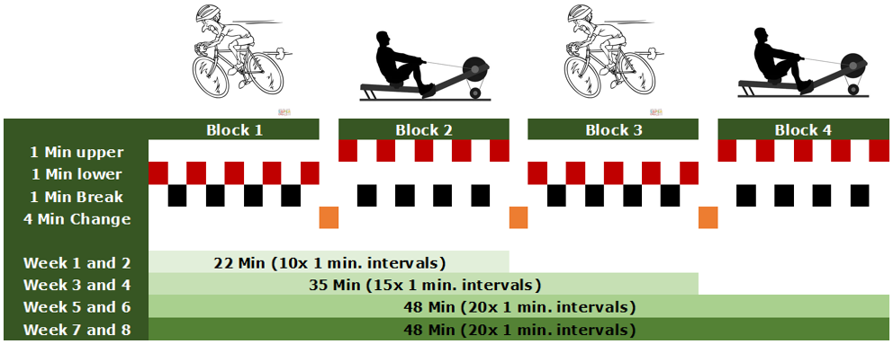
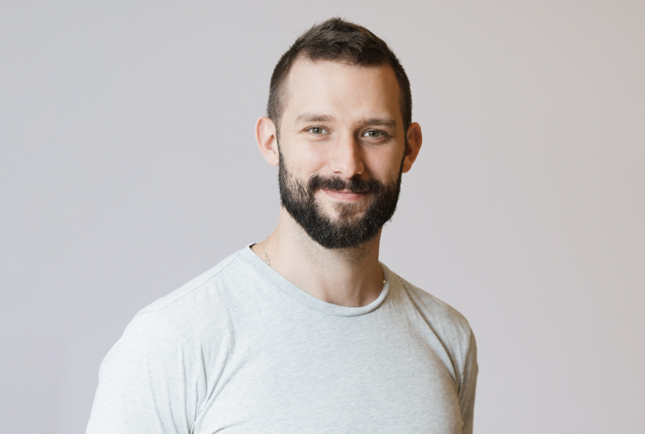

LIVING - En national evaluering af patientuddannelseskonceptet Lev Livet
Om projektet
LIVING er et forskningsprojekt, der undersøger effekten af patientuddannelseskonceptet Lev Livet, som er målrettet borgere med Type 2-Diabetes. Projektet har allerede tiltrukket deltagelse fra fire kommuner fra Region Midtjylland, Region Syddanmark, og Region Sjælland. Der er stadig mulighed for, at flere kommuner kan blive en del af projektet.
Formålet med LIVING er at evaluere tre forskellige måder at integrere Lev Livet i kommunale sundhedstilbud. Ved at deltage bidrager kommunerne til vigtig evidens på et område, der endnu ikke er tilstrækkeligt belyst. Deltagende kommuner har mulighed for at vælge én af følgende tilgange:
- Lev Livet Fast Track
- Lev Livet
- Lev Livet inklusiv træning
Du kan læse mere om Lev Livet konceptet her: https://levlivet.online/
Fordele ved at deltage
Deltagerkommunerne får mulighed for at:
Være på forkant med sundhedsinnovation og evidensbaserede praksisser.
Opbygge erfaring med forskning og bidrage til udviklingen af fremtidige sundhedsindsatser for borgere med type 2-diabetes.
Drage fordel af gratis Lev Livet-materiale og bruge forskningsresultater som beslutningsgrundlag for at optimere sundhedstilbud.
Modtage økonomisk kompensation for ekstra arbejdstimer relateret til projektet.
Styrke samarbejdet mellem kommunale aktører og forskere, hvilket kan skabe nye partnerskaber og samarbejdsmuligheder.
Ofte stillede spørgsmål
Hvorfor er det vigtigt at evaluere Lev Livet?
Med regeringens nylige fremlagte lovforslag om en national kvalitetsplan, som sigter mod at fastlægge forpligtende standarder og anbefalinger for kommunale sundhedsindsatser, står vi på tærsklen til at skabe et mere ensartet sundhedsvæsen i hele landet. Det er dog vigtigt at bemærke, at meget få kommunale sundhedstilbud for type 2-diabetes hidtil er blevet omfattende evalueret i et forskningsmæssigt perspektiv. Derfor er der et behov for at belyse evidensen og identificere (omkostnings)effektive interventioner. Dette vil kvalificere de foreslåede krav og anbefalinger og give os mulighed for at skabe bedre sundhedsfremmende tilbud for borgere med type 2-diabetes.
Hidtidige evalueringer af Lev Livet har primært fokuseret på brugertilfredshed og har ikke inkluderet vigtige sundhedsindikatorer som blodsukkerniveau, blodtryk,fysisk formåen og aktivitet. Dette gør det vanskeligt at konkludere, om Lev Livet faktisk reducerer risikoen for diabetiske komplikationer.
Forskningsprojektet LIVING er dedikeret til at udforske dette. Vi vil ikke kun afdække, om Lev Livet forbedrer deltageres evne til at håndtere deres sygdom, men også om det faktisk påvirker de før nævnte sundhedsindikatorer. Vi går endnu videre ved at foretage antropologiske og økonomiske vurderinger for at forstå de bredere implikationer af Lev Livet. Ved at indsamle en rig og omfattende datamængde søger vi ikke kun at besvare, i hvilken grad Lev Livet når sine mål, men også at dykke ned i, hvordan personalets arbejdsmønstre påvirkes og hvordan Lev Livet interagerer med omgivelserne, hvor det implementeres. Desuden vil vi afdække de ressourcer, der kræves for at opnå klinisk relevante forbedringer. Foruden at evaluere Lev Livet vil vi i dette forskningsprojekt også undersøge betydningen af fysisk træning som en central komponent i kommunale sundhedstilbud til borgere med type 2-diabetes.
Hvordan har vi designet studiet og hvad betyder det for jer, hvis I vælger at deltage?
LIVING forskningsprojektet er designet som et lodtrækningsforsøg, som undersøger tre interventioner; 1) Lev Livet Fast Track versus venteliste i 4 måneder, 2) Lev Livet versus venteliste i 5 måneder og 3) Lev Livet + træning versus venteliste i 5 måneder. Som kommune kan I selv vælge hvilken intervention, I ønsker at tilbyde. Når en borger kommer til afklarende samtale i jeres kommune, vil I informere borgeren om forskningsprojektet, forhøre jer om borgeren ønsker at deltage og bede borgeren om at underskrive en samtykkeerklæring. Derefter vil I ved hjælp af et computersystem (REDcap) tilfældigt tilskrive borgeren intervention på det næste hold, eller sætte borgeren på en fem måneders venteliste. Borgerne bliver automatisk randomiseret ud fra en 2:1 nøgle, hvilket betyder at dobbelt så mange borgere får intervention med det samme i forhold til borgere, der kommer på venteliste.
For at opnå statistisk styrke til at drage meningsfulde konklusioner, skal hver kommune rekruttere 48 borgere (32 til interventinsgruppen og 16 til kontrolgruppen). Der er ikke fastlagt en tidsbegrænsning for, hvor længe det kan tage at rekruttere 48 borgere.
Hvad indeholder de forskellige interventioner
Lev Livet består af i alt 9 kursusmoduler. I de første fire kursusmoduler undervises der i mestring på tværs af diagnoser, og her er der mulighed for at borgere med forskellige kroniske sygdomme deltager. Herefter overgår borgerne med type 2-diabetes til fire diagnosespecifikke kursusmoduler efterfulgt af et opfølgningsmodul (modul 9). Som udgangspunkt afholdes modulerne i forlængelse af hinanden over otte uger med undtagelse af eventuelle ferie og helligdage.

Lev Livet Fast Track er en forkortet udgave af Lev Livet forløbet, hvor de første fire moduler er kombineret til ét enkelt modul.
Lev Livet + Træning. Foruden at tilbyde Lev Livet eller Lev Livet Fast Track, er det valgfrit at tilbyde en træning som indeholder højintens interval træning (HIIT). HIIT-interventionen udgør rammen for træningssessionerne, hvor I som sundhedsprofessionelle sammensætter et passende program med øvelser, der matcher hver enkelt deltagers evner, behov og motivation. Øvelserne kan tilpasses efter deltagerens ønsker, så længe træningen lever op til den beskrevne intensitet, træningsmængde og involverer både muskler i over- og underkrop. HIIT-protokol løber over 8 uger og består af serier med 5 x 1 minuts højintensive intervaller, afbrudt af 1 minuts aktiv restitution (se Figur). Efter hver serie er der en pause på 4 minutter, hvor deltagerne kan skifte mellem øvelser for overkrop og underkrop. HIIT-interventionen udvikler sig gradvist fra to ugentlige træningssessioner med to træningsblokke (i alt 22 minutters træning) i de første to uger til fire træningsblokke i de sidste fire uger af interventionen. Træningsintensiteten overvåges ved hjælp af Borg15-skalaen. Træningsintensiteten ligge mellem Borg 14 og 16, hvilket svarer til 77-93% af makspuls.

Terapeutens rolle er afgørende for interventionens succes. HiiT-interventionen skal, som tidligere nævnt, fungere som en ramme og ikke afløse jeres kliniske dømmekraft. Det er som i jeres vanlige arbejde fortsat vigtigt at give den nødvendige opbakning, opretholde træningskvaliteten, minimere risikoen for belastningsskader, tilpasse øvelser for at opretholde motivationen og generelt tage højde for borgernes individuelle behov og funktionsniveau.
Hvilke krav er der til at sammensætte et forløb?
For at sikre, at alle deltagerkommuner tilbyder en nogenlunde ens patientuddannelse, har vi defineret det mindste, som hver kommune skal tilbyde af Lev Livet konceptet. Det er ikke målet at alle kommuner skal tilbyde et ens tilbud, blot at alle kommuner arbejder inden for den samme ramme. Vi har organiseret det således, at alle temaer i Lev Livet skal dækkes af minimum en øvelse og eventuelt et oplæg. Det er muligt at tænke kreativt inden for denne ramme, rykke rundt på temaer og emner, e lign. så det passer ind i jeres kontekst. Vi har valgt, at det er valgfrit at inkludere “tjek ind” og “tjek ud” øvelser, men vi anbefaler, at de bruges, hvis der er tid til det. På hjemmesiden er de tidssat til 20 min, men det kan gøres meget kortere i den virkelige verden. Det er vigtigt at bemærke, at det angivne tidsestimat på Lev Livet hjemmesiden kun er et skøn, og den faktiske tid kan variere, men plejer at blive kortere, når underviserne bliver mere fortrolige med øvelserne. Når I sætter et forløb sammen på hjemmesiden, kan det samlede tidsestimatet virke overvældende. Vi har dog gode erfaringer med, at tænke kreativt og skære ned til en sessionslængde, som de fleste kommuner kan være med på.
Deltagerkommunerne skal inden forskningsperioden starter, afprøve Lev Livet på et “prøvehold” og eventuelt tilføje eller rette øvelserne i programmet. Derefter beder vi jer fastlægge et program af øvelser, som afprøves i løbet af forskningsperioden. Vi står til rådighed i forhold til sparring i denne proces. Vi kan desuden trække på erfaringer fra kommuner, som har implementeret Lev Livet med succes. Efter forskningsperioden kan øvelserne frit udskiftes til fordel for andre øvelser. Se Lev Livet hjemmesiden https://levlivet.online/
Hvorfor undersøge HiiT og ikke almindelig kontinuerlig træning?
Forskning viser, at korte og intense træningsprogrammer, kan være lige så gode og endda bedre end længere kontinuerlig træning, når det drejer som at forbedre insulinfølsomhed og regulere blodsukkerniveauer. HiiT synes også at minimere fænomenet “non-respons”, hvor det ellers er blevet observeret at op til 40% af personer som dyrker regelmæssig kontinuerlig træning, ikke oplever markante forbedringer i deres fysiske form. HiiT synes således at virke for de fleste mennesker, selv dem der normalt ikke oplever store forbedringer fra motion. HiiT er derfor en effektiv måde at optimere træningsresultater og opnå sundhedsfordelende ved blot at træne 20-40 minutter to til tre gange ugentligt. Desuden ved vi, at mange mennesker nedprioriterer træning på grund af manglende tid. Hvis vi kan finde på korte og motiverende træningsinterventioner, kommer vi forhåbentlig tættere på at løse udfordringen med at fastholde sunde træningsvaner.
Hvad er de næste skridt, hvis I er interesserede i at deltage?
Tilpasning og planlægning: Hvis I er interesserede i at deltage, vil vi planlægge et møde med jer for at imødekomme eventuelle spørgsmål. På mødet vil vi også tale om, hvordan forskningsprojektet kan tilpasses jeres ønsker, behov og kapacitet (fx valg af intervention, fastsætte hvor mange hold der skal til for at opnå 48 deltagere el.lign.). Desuden vil vi sammen lave en tidsplan for projektet.
Det juridiske: Når vi har fastlagt en plan og I føler jer klædt på til at indgå i projektet, vil der udarbejdes en databehandleraftale.
Opkvalificering og support: Der planlægges møder for at hjælpe jer godt i gang med at bruge Lev Livet. Desuden bliver relevant personale oplært i dataindsamling og forskningsprocedure. Der udnævnes en person fra jeres sundhedscenter som er ansvarlig for at procedurer bliver afholdt. I får en kontaktperson fra Steno Aarhus til at besvare spørgsmål og yde support. Løbende vil vi holde møder for at adressere eventuelle udfordringer, give feedback på samarbejdet og opdatere på projektets fremskridt.
Kontakt
Jonas Munk Jensen
- Projektleder og kontaktperson
- Mail: jonas.munk.jensen@rm.dk
- Tlf. 2460 7984

Anette Andersen
- Programleder og Overlæge
- Mail: anette.andersen@rm.dk
- Tlf. 2213 5605